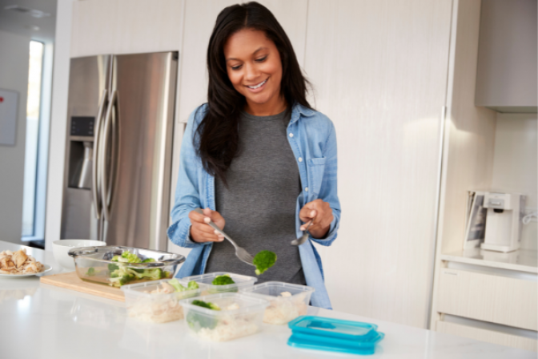

Persiapan Makanan 101 untuk Penyakit Ginjal
Tanyakan kepada ahli kesehatan Anda untuk memastikan Anda mengonsumsi makanan terbaik untuk stadium penyakit ginjal Anda, lalu cobalah delapan resep berikut. Mereka akan membuat anggaran, tubuh, dan ginjal Anda tersenyum.

16 Resep Memanggang Sehat untuk Penderita Penyakit Ginjal
Siapkan pemanggangnya! Saatnya untuk berpindah dari dapur ke teras dan menikmati aroma asap dan rasa luar biasa dari makanan ramah ginjal dari panggangan. Koleksi resep memanggang kami menampilkan makanan dengan potasium rendah , natrium rendah , dan fosfor rendah.
8 Trik memasak untuk penderita ginjal, sehat dan gampang ditiru
agar makanan yang dikonsumsi cocok dan sehat bagi penderita ginjal, kamu pun perlu lebih teliti lagi saat memasak. Berikut ini beberapa tips dan trik memasak yang mudah kamu tiru
Temukan Resep - Dapur Ginjal - Kidney Kitchen
Anda dapat menyesuaikan rencana makan berdasarkan kebiasaan makan pasien, preferensi, dan batasan apa pun. ... Makan Sehat Penderita Penyakit Ginjal Menu Toggle.